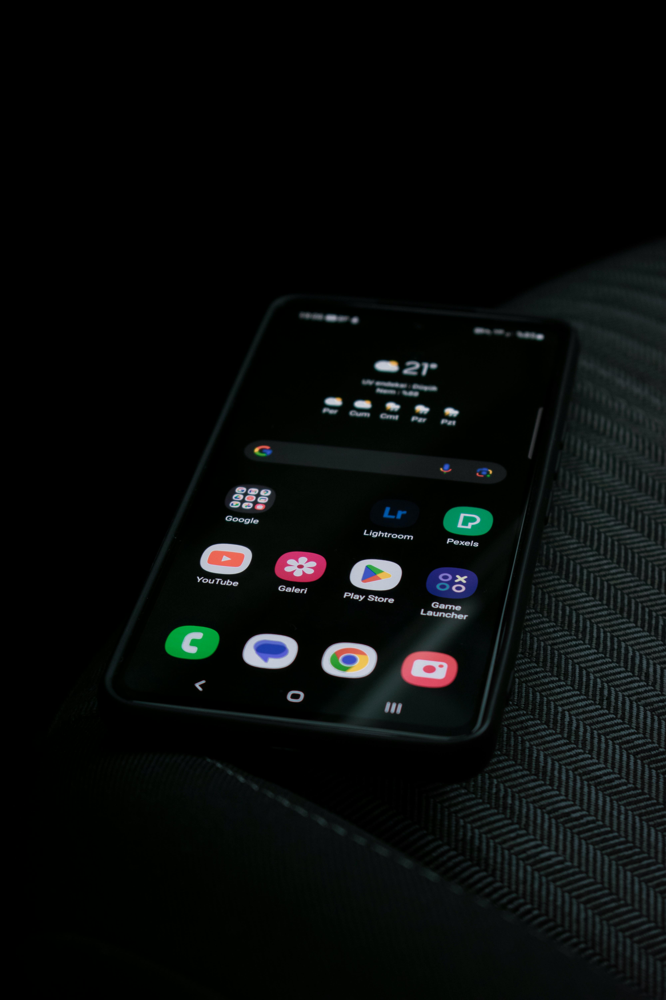

Talksy vai com você, onde a vida acontece.
No banco do carro, no caminho para o trabalho ou voltando para casa, o Talksy está sempre ao seu alcance. Com acesso rápido pelo celular, você participa de conversas, entra em chamadas e acompanha sua comunidade em tempo real. Não importa onde você esteja — na estrada, no intervalo ou em movimento — a conexão continua fluida. Talksy transforma qualquer momento em uma oportunidade de estar presente.
Reuniões mais inteligentes começam com Talksy.
Em uma sala de reunião cheia de ideias, decisões e colaboração, o Talksy mantém todos conectados — presencialmente ou à distância. Compartilhe arquivos, organize canais por projeto e participe de chamadas em tempo real, direto do notebook ou do celular. Enquanto a equipe conversa, a comunicação continua fluida e organizada. Com o Talksy, produtividade e conexão caminham juntas.
Uma conversa, vários dispositivos.
Não importa se é pelo tablet, celular ou notebook — o Talksy mantém todos sincronizados em tempo real. Enquanto cada pessoa interage pelo seu próprio dispositivo, a comunicação flui de forma integrada e contínua. Compartilhe ideias, envie arquivos e participe de chamadas sem perder o ritmo. Com o Talksy, a conexão acontece de forma natural, em qualquer tela.
Conectados juntos, mesmo em mundos diferentes.
Lado a lado, cada pessoa no seu próprio dispositivo — mas todos conectados pelo mesmo propósito. Com o Talksy, a comunicação ultrapassa o espaço físico e cria pontes entre ideias, projetos e comunidades. Seja no celular, tablet ou notebook, a conversa nunca para. Porque no Talksy, estar conectado vai além de estar presente — é participar de algo maior.